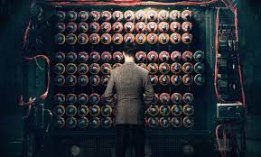
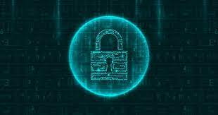

Criptografía
Historia

¿Alguna vez os habéis preguntado que significa este candado?

Sí el candado que aparece en los navegadores cuando acedemos a una web de forma segura. Para entender su significado, debemos retroceder en el tiempo varios milenios.
Desde los inicios de la comunicación escrita, el ser humano se ha enfrentado a uno de los mayores problemas en este ámbito. ¿Cómo podemos mantener una comunicación privada? Este es un problema que se ha extendido durante los pasados siglos, y que como veremos, su solución actual se quedará obsoleta antes de lo que pensábamos.
¿De qué manera podemos convertir un mensaje en algo indescifrable por un extraño, pero a la misma vez manteniendo su sentido original para el destinatario?
Los primeros indicios de criptografía se remontan al imperio romano, cuándo el emperador Julio César mandó crear un método para mantener los mensajes seguros en caso que un enemigo los interceptara. Este método, llamado Cifrado César, consiste en desplazar las letras del abecedario un número determinado de veces.
El número de veces que desplazamos una letra es la clave o llave, ya que cualquier persona que conozca esta llave puede descifrar el mensaje. En estos casos, cuando la llave usada para encriptar un mensaje es la misma que se usa para el proceso de desencriptación, hablamos de criptografía simétrica.
Actualmente los algoritmos usados para la encriptación simétrica de datos son mucho más complicados que el Cifrado César, volviendo los ataques por fuerza bruta completamente inviables. Uno de los algoritmos más conocidos es: AES que tiene una clave que oscila entre los 128 y 256 bits.
La solución a los problemas de la criptografía simétrica la aporta la criptografía asimétrica. Esta tiene dos claves: la clave pública y la clave privada. Las dos se encuentran relacionadas por propiedades matemáticas y se generan simultáneamente, por eso también se llaman keypair o par de claves.
Los keypairs tienen unas propiedades muy especiales que solucionan muchos de los problemas de la criptografía simétrica:
Criptografía |
||
Historia |
Inicio |
<Importancia |